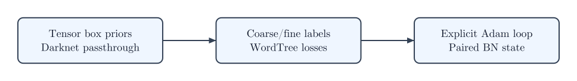
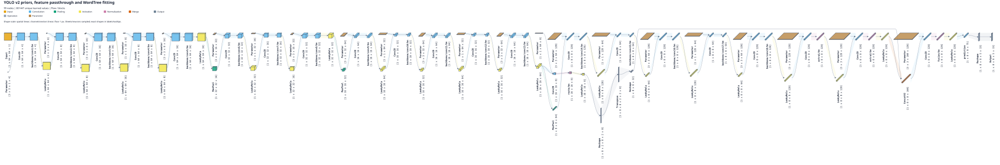
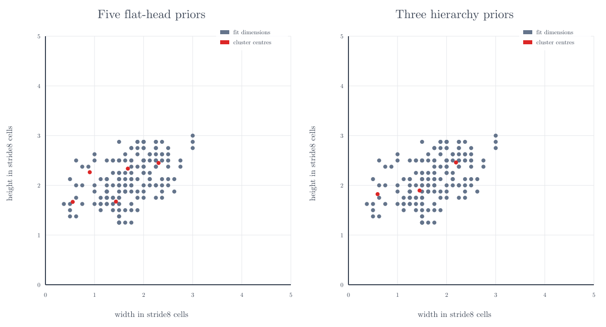
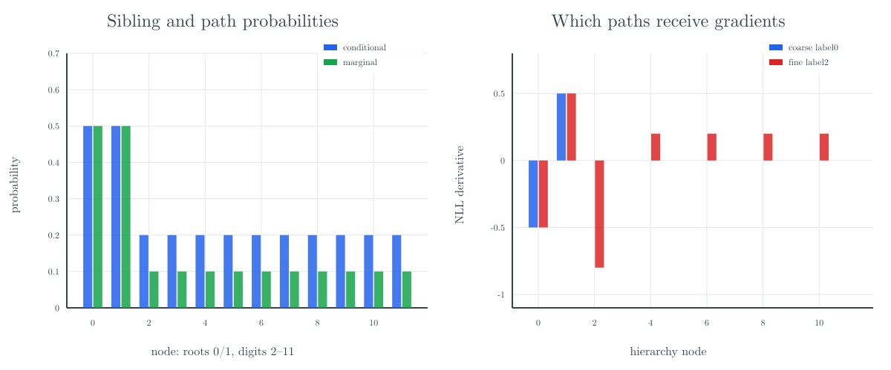
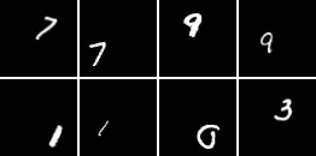
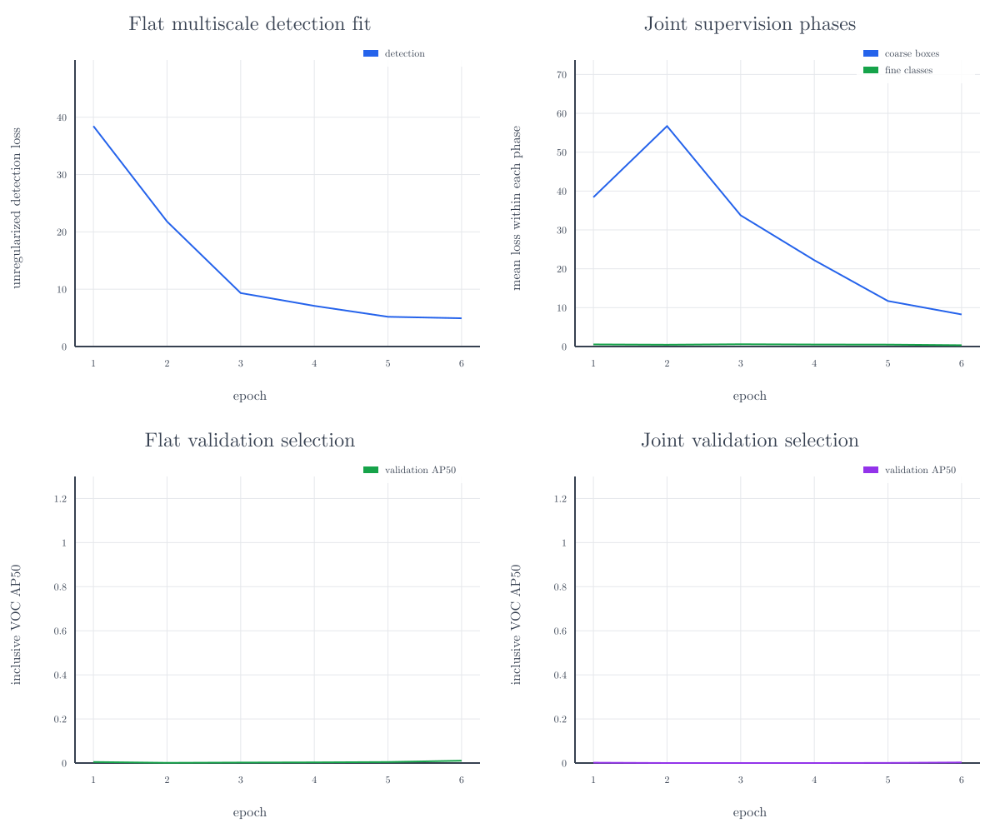
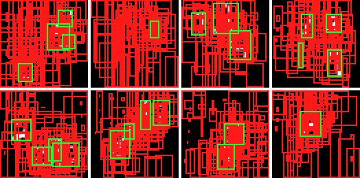
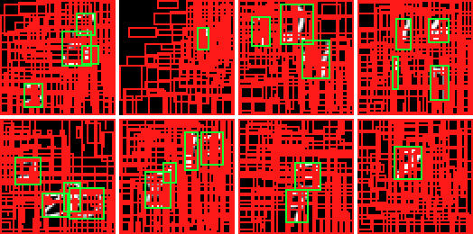
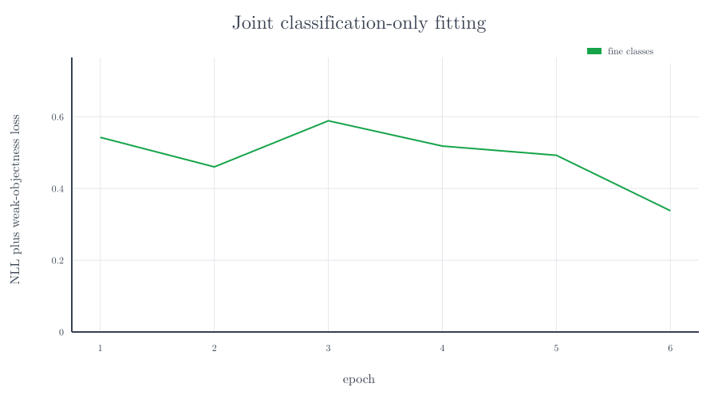

YOLO v2 priors, feature passthrough and WordTree fitting
Abstract
Verify fit-only tensor IoU clustering, conditional hierarchy gradients, anchor/classification-only objectives and full20/9418-class graphs, then explicitly fit compact flat and joint detectors with multiscale inputs, paired BN checkpoints and actual scene galleries.
Source example: examples/cpp/source/nn/1_convolutional_neural_networks/1.6_object_detection/yolo_v2.cpp.
The method
YOLO v2 adds dimension priors and fine-feature space-to-depth passthrough. YOLO9000-style WordTree supervision combines coarse detection boxes with fine image labels, selecting an objectness-weighted marginal prediction for classification-only examples.
The concept diagram below is drawn by dm::graphics::Diagram. Its editable C++
source is the complete block below; regeneration uses the same datamunge toolchain
as the numerical examples. Exports consume the saved local SVG.
#include <dm/dm.hpp>
int main() {
std::filesystem::create_directories("build");
dm::graphics::Diagram diagram;
diagram.node("n0", {0.0, 0}, "Tensor box priors\nDarknet passthrough");
diagram.node("n1", {5.2, 0}, "Coarse/fine labels\nWordTree losses");
diagram.node("n2", {10.4, 0}, "Explicit Adam loop\nPaired BN state");
diagram.edge("n0", "n1").edge("n1", "n2");
diagram.save_svg("build/yolo_v2_concept.svg");
}
Executed tensor architecture
This figure executes the inference configuration shown in the code, using a zero-valued shape probe without fitting or loading a checkpoint. Named stage boundaries group whole subgraphs where available; other nodes retain functional-layer detail. Exact batch-inclusive shapes and reachable parameter totals come from the trace. Shared linear scales map spatial dimensions and channel counts to blocks; the one-pixel visibility floor is disclosed in the legend. Labels use compact monospace text, rotate counterclockwise and sit beside their own glyphs. Arrows flow left to right; wide diagrams scroll at native size on the website.
#include <dm/dm.hpp>
int main() {
namespace n = dm::nn;
namespace m = n::models;
n::set_num_threads(2);
std::filesystem::create_directories("build");
const bool joint = false;
m::DetectionSceneConfig cfg;
m::YoloV2Config model;
n::ParameterStore p(17), state(17);
cfg.scenes = 80;
cfg.seed = 11;
cfg.scenes = 8;
cfg.seed = 22;
model.compact = true;
model.width_divisor = 8;
model.classes = joint ? 12 : 10;
model.anchors = joint ? 3 : 5;
n::Module architecture_model(
[&](const n::Tensor& image) { return m::YoloV2(p, state, image, model, false).raw; },
"YOLO v2 priors, feature passthrough and WordTree fitting");
n::ModelPlotOptions options;
options.style = n::ModelPlotStyle::Flow;
options.detail = n::ModelPlotDetail::Blocks;
options.labels = {.type = n::ModelPlotLabel::NameAndShape, .size = 12, .wrap = 24};
options.spacing = {.layer = 24, .lane = 12, .label = 8, .margin = 20};
options.sizing.spatial_size = 96;
options.sizing.channel_size = 42;
options.sizing.minimum_extent = 1;
options.opacity = .8;
const auto diagram = architecture_model.plot(n::zeros({1, 64, 64, 1}), options);
diagram.save_svg("build/yolo_v2_architecture.svg");
std::print(
"{} displayed nodes; {} reachable learned values.\n",
diagram.nodes().size(),
diagram.parameter_count());
}99 displayed nodes; 801447 reachable learned values.

Fit-only IoU dimension priors
YOLO v2 replaces YOLO v1's direct root-size outputs with dimension priors. Centres are sigmoid cell offsets; sizes exponentiate log ratios from priors. Prior dimensions are in feature-grid units. The source's IoU-distance clustering starts from sample0, repeatedly selects the farthest sample from existing centres, then alternates highest-IoU assignment and arithmetic means. It retains empty centres, stops below1e-5 change or100 iterations and sorts by area. All arithmetic, assignment and updates use tensors; this preprocessing algorithm has no gradient optimizer. It sees *only fitting boxes*.
The report uses64 fit/16 validation scenes from the first2048 official MNIST training digits(seed11), plus eight test scenes from the first512 official test digits(seed22). Five priors serve flat10-class detection; three serve the joint12-node hierarchy. The entire set of fit-box dimension samples is plotted. Validation/test boxes never influence clustering.
#include <dm/dm.hpp>
int main() {
namespace n = dm::nn;
namespace m = n::models;
std::filesystem::path cache;
if (const auto *p = std::getenv("DATAMUNGE_DATA_DIR"))
cache = p;
else if (const auto *p = std::getenv("XDG_CACHE_HOME"))
cache = std::filesystem::path(p) / "datamunge/datasets";
else
cache = std::filesystem::path(std::getenv("HOME")) / ".cache/datamunge/datasets";
dm::datasets::fetch("mnist", (cache / "mnist").string());
const auto digits = n::load_mnist((cache / "mnist").string(), "train");
m::DetectionSceneConfig cfg;
cfg.scenes = 80;
cfg.seed = 11;
const auto scenes = m::MakeTensorDetectionScenes(
n::slice_axis(digits.images, 0, 0, 2048), n::slice_axis(digits.labels, 0, 0, 2048), cfg);
std::vector<n::Tensor> samples;
for (int row = 0; row < 64; ++row)
samples.push_back((n::slice_axis(scenes.boxes[row], 1, 2, 4) -
n::slice_axis(scenes.boxes[row], 1, 0, 2)) /
8.);
const auto dimensions = n::concat(samples, 0),
five = m::ClusterYoloDimensions(dimensions, 5),
three = m::ClusterYoloDimensions(dimensions, 3);
const auto xy = n::unstack(dimensions, 1);
auto plot = [&](const n::Tensor &priors, const std::string &title) {
const auto p = n::unstack(priors, 1);
auto a = dm::graphics::RPlot::create();
a.points(xy[1].to_vector<double>(), xy[0].to_vector<double>(), "fit dimensions",
{100, 116, 139})
.points(p[1].to_vector<double>(), p[0].to_vector<double>(), "cluster centres",
{220, 38, 38})
.title(title)
.x_label("width in stride8 cells")
.y_label("height in stride8 cells")
.x_limits(0, 5)
.y_limits(0, 5);
return a;
};
std::filesystem::create_directories("build");
dm::graphics::RLayout::create(1, 2)
.add(plot(five, "Five flat-head priors"))
.add(plot(three, "Three hierarchy priors"))
.size(1200, 650)
.fit_panels()
.save_svg("build/yolo_v2_priors.svg");
std::print("{} fit-only box dimensions.\n| head | height | width |\n|---|---:|---:|\n",
dimensions.shape()[0]);
for (bool joint : {false, true}) {
const auto p = joint ? three : five;
for (std::int64_t i = 0; i < p.shape()[0]; ++i)
std::print("| {} | {:.6f} | {:.6f} |\n", joint ? "joint" : "flat", p.at({i, 0}),
p.at({i, 1}));
const auto overlap = m::YoloDimensionIoU(dimensions.reshape({dimensions.shape()[0], 1, 2}),
p.reshape({1, p.shape()[0], 2}));
std::print("{} mean best shape IoU{:.6f}.\n", joint ? "Joint" : "Flat",
n::mean(n::max(overlap, {1})).item());
}
const auto known =
m::ClusterYoloDimensions(n::tensor({2., 4., 8., 4., 2., 4., 8., 4.}, {4, 2}), 2);
if (known.to_vector<int>() != std::vector<int>{2, 4, 8, 4})
return 1;
}162 fit-only box dimensions.
| head | height | width |
|---|---|---|
| flat | 1.666667 | 0.555556 |
| flat | 2.263889 | 0.902778 |
| flat | 1.672872 | 1.436170 |
| flat | 2.336309 | 1.678571 |
| flat | 2.450000 | 2.304545 |
Flat mean best shape IoU0.810625.
| joint | 1.822917 | 0.593750 |
| joint | 1.895833 | 1.448718 |
| joint | 2.460069 | 2.190972 |
Joint mean best shape IoU0.780279.

WordTree probabilities and coarse/fine supervision
The root is implicit. Two top-level nodes represent digit parity; nodes2–11 represent digits0–9 and point to their parity parent. Sibling conditionals use softmax. A node's marginal multiplies its conditional with every ancestor's, computed as exp(sum log-conditionals). At zero logits, roots have marginal.5, leaves.1 and leaf conditionals.2. Leaves partition probability one; all nodes together do not form a flat probability distribution.
A coarse/root label supervises only its sibling group. A fine label supervises its root group and its own sibling group, leaving the other branch untouched. The fixture checks every derivative of both paths. A synthetic9418-node root softmax also checks the large head's class-capacity contract, without implying that those semantic categories or pretrained weights are supplied.
#include <dm/dm.hpp>
int main() {
namespace n = dm::nn;
const n::models::WordTree tree({-1, -1, 0, 1, 0, 1, 0, 1, 0, 1, 0, 1});
const auto x = n::zeros({1, 12}, n::DType::Float64).requires_grad_();
const auto p = n::models::WordTreeProbabilities(x, tree);
std::vector<double> coarse, fine;
double error = 0;
for (int label : {0, 2}) {
const auto loss =
n::mean(n::models::WordTreeLoss(n::models::WordTreeProbabilities(x, tree),
n::full({1}, double(label), n::DType::Int64), tree));
const auto g = n::grad(loss, {x})[0].to_vector<double>();
for (int node = 0; node < 12; ++node) {
const double expected = node == 0 ? -.5
: node == 1 ? .5
: label == 0 ? 0
: node == 2 ? -.8
: node % 2 == 0 ? .2
: 0.;
error = std::max(error, std::abs(g[node] - expected));
}
if (label == 0)
coarse = g;
else
fine = g;
}
if (error > 1e-12)
return 1;
const auto ids = n::arange(0, 12).to_vector<double>();
std::vector<double> left = ids, right = ids;
for (auto &v : left)
v -= .18;
for (auto &v : right)
v += .18;
auto a = dm::graphics::RPlot::create();
a.bars(left, p.conditional.to_vector<double>(), "conditional", {37, 99, 235}, .32)
.bars(right, p.marginal.to_vector<double>(), "marginal", {22, 163, 74}, .32)
.title("Sibling and path probabilities")
.x_label("node: roots 0/1, digits 2–11")
.y_label("probability")
.y_limits(0, .7);
auto b = dm::graphics::RPlot::create();
b.bars(left, coarse, "coarse label0", {37, 99, 235}, .32)
.bars(right, fine, "fine label2", {220, 38, 38}, .32)
.title("Which paths receive gradients")
.x_label("hierarchy node")
.y_label("NLL derivative")
.y_limits(-1.1, .8);
std::filesystem::create_directories("build");
dm::graphics::RLayout::create(1, 2).add(a).add(b).size(1200, 500).fit_panels().save_svg(
"build/yolo_v2_tree.svg");
const n::models::WordTree wide(std::vector<int>(9418, -1));
const auto large = n::models::WordTreeProbabilities(n::zeros({1, 9418}), wide);
const double loss =
n::models::WordTreeLoss(large, n::full({1}, 9417., n::DType::Int64), wide).item();
if (std::abs(loss - std::log(9418.)) > 2e-6)
return 1;
std::print("Every coarse/fine path derivative passes, max error{:.12f};9418-node "
"NLL{:.6f}=log(9418). Roots marginal.5, leaf conditional.2 and marginal.1.\n",
error, loss);
}Every coarse/fine path derivative passes, max error0.000000000000;9418-node NLL9.150378=log(9418). Roots marginal.5, leaf conditional.2 and marginal.1.

Detection and classification-only objectives
Raw outputs per anchor are dy,dx,logh,logw,objectness,class logits. Sigmoid
centres and exp(clipped log sizes,±10) decode prior-relative boxes. Each truth
chooses its best shape prior and centre cell, first on shape ties. Same-slot
collisions keep larger area, first on ties. Current prediction IoU becomes a
detached confidence target. Unassigned predictions overlapping truth by IoU
strictly greater than.6 are ignored. Positives override weights to1; remaining
background confidence weights are.5.
The detection loss is coordinate SSE*5 + sigmoid-confidence SSE + positive
flat CE/WordTree path NLL, divided by positive anchors floored at one.
Classification-only hierarchy examples choose the detached prediction maximizing
objectness*marginal(label), then supervise that path and
square(ReLU(.3-objectness)). They have no box target. Native fixtures check
all seven detection derivatives and all34 classification-only derivatives,
including selection reversal and weak-objectness derivative-.032.
#include <dm/dm.hpp>
int main() {
namespace n = dm::nn;
namespace m = n::models;
const auto type = n::DType::Float64;
const auto raw = n::zeros({1, 1, 1, 1, 7}, type).requires_grad_();
m::YoloV2Targets t{n::from_vector(std::vector<double>{.25, .75, .2, -.3}, {1, 1, 1, 1, 4}),
n::ones({1, 1, 1, 1}, type),
n::ones({1, 1, 1, 1}, type),
n::ones({1, 1, 1, 1}, type),
n::ones({1, 1, 1, 1}, n::DType::Int64),
0};
const auto loss = m::YoloV2Loss(raw, t, 2, {});
const auto g = n::grad(loss, {raw})[0].to_vector<double>();
const std::vector<double> expected = {.625, -.625, -2, 3, -.25, .5, -.5};
double error = std::abs(loss.item() - (1.525 + std::log(2.)));
for (int k = 0; k < 7; ++k)
error = std::max(error, std::abs(g[k] - expected[k]));
if (error > 1e-12)
return 1;
const m::WordTree tree({-1, -1, 0, 1, 0, 1, 0, 1, 0, 1, 0, 1});
std::vector<double> x(34);
x[22] = std::log(2.);
x[4] = std::log(.1 / .9);
x[21] = std::log(.2 / .8);
const auto weak = n::from_vector(x, {1, 1, 2, 1, 17}).requires_grad_();
m::YoloV2Targets empty{n::zeros({1, 1, 2, 1, 4}, type),
n::zeros({1, 1, 2, 1}, type),
n::zeros({1, 1, 2, 1}, type),
n::zeros({1, 1, 2, 1}, type),
n::zeros({1, 1, 2, 1}, n::DType::Int64),
0};
m::YoloV2Weights w;
w.detection = 0;
w.classification = 1;
w.classification_labels = n::full({1}, 2., n::DType::Int64);
const auto weak_loss = m::YoloV2Loss(weak, empty, 12, w, &tree);
const auto wg = n::grad(weak_loss, {weak})[0].to_vector<double>();
if (std::abs(weak_loss.item() - (std::log(7.5) + .01)) > 1e-12 ||
std::abs(wg[21] + .032) > 1e-12)
return 1;
for (int a = 0; a < 2; ++a)
for (int k = 0; k < 4; ++k)
if (wg[a * 17 + k] != 0)
return 1;
std::print("Detection fixture loss{:.12f}, all seven derivative max error{:.12f}. "
"Classification-only loss{:.12f}, weak objectness derivative{:.6f}, exact zero "
"geometry derivatives. Selection is detached.\n",
loss.item(), error, weak_loss.item(), wg[21]);
}Detection fixture loss2.218147180560, all seven derivative max error0.000000000000. Classification-only loss2.024903020542, weak objectness derivative-0.032000, exact zero geometry derivatives. Selection is detached.
Full Darknet graphs and compact multiscale inputs
YOLO v2 retains all18 Darknet feature convolutions, two extra convolutions, a reduced fine route with2x2 space-to-depth passthrough, a fusion convolution and biased linear head. Other convolutions have BN gamma/beta,epsilon1e-5, momentum.9 and leaky-ReLU.1. No pretrained ImageNet weights are loaded.
The next block executes full-width20-class/five-prior and9418-node/three-prior heads at128 pixels, computing all68 learned tensor gradients in each. Counts are50,655,389 and79,502,989 learned scalars, with20,672 BN-state scalars. These are initialized graph checks; no9418-class dataset accuracy is claimed. Compact width-divisor8 grayscale models skip the first two pools, giving stride8 grids8/10/12 at64/80/96 input pixels. Five-prior flat count is801,447; three-prior12-node joint count is798,351; each has2,584 state scalars.
#include <dm/dm.hpp>
int main() {
namespace n = dm::nn;
n::set_num_threads(2);
for (bool large : {false, true}) {
n::ParameterStore p(17), state(17);
n::models::YoloV2Config c;
c.update_stats = false;
if (large) {
c.classes = 9418;
c.anchors = 3;
}
const auto net = n::models::YoloV2(
p, state, n::sin(.13 * n::arange(0, 128 * 128 * 3)).reshape({1, 128, 128, 3}), c,
true);
const auto gradients = n::grad(n::mean(n::square(net.raw)), p.parameters());
if (p.count() != (large ? 79502989 : 50655389) || state.count() != 20672 ||
gradients.size() != 68)
return 1;
for (const auto &g : gradients)
if (!g.defined() || !std::isfinite(n::sum(n::square(g)).item()))
return 1;
std::print("Full{}-class/{}-prior model:{} learned/{} state scalars, all{} finite defined "
"tensor derivatives at128px.\n",
c.classes, c.anchors, p.count(), state.count(), gradients.size());
}
n::ParameterStore p(17), state(17);
n::models::YoloV2Config c;
c.classes = 10;
c.compact = true;
c.width_divisor = 8;
c.update_stats = false;
for (int side : {64, 80, 96}) {
n::NoGradGuard guard;
const auto net = n::models::YoloV2(p, state, n::ones({1, side, side, 1}), c, false);
if (net.raw.shape() != n::Shape{1, side / 8, side / 8, 5, 15} ||
net.passthrough.shape()[3] != 32)
return 1;
std::print("Compact{}px: grid{}, reorg32 channels,{} learned/{} state scalars.\n", side,
side / 8, p.count(), state.count());
}
}Full20-class/5-prior model:50655389 learned/20672 state scalars, all68 finite defined tensor derivatives at128px. Full9418-class/3-prior model:79502989 learned/20672 state scalars, all68 finite defined tensor derivatives at128px. Compact64px: grid8, reorg32 channels,801447 learned/2584 state scalars. Compact80px: grid10, reorg32 channels,801447 learned/2584 state scalars. Compact96px: grid12, reorg32 channels,801447 learned/2584 state scalars.
Actual detection and classification-only inputs
The first gallery shows the common64-pixel training scene split and its true boxes. The second uses separate seed33,one-object scenes from the same fit-only digit pool for classification-only supervision. Their labels remain available, but their boxes are deliberately removed from the classification-only loss. This is a tiny parity/digit hierarchy demonstration, not COCO/ImageNet joint training or a supplied9418-node semantic hierarchy.
#include <dm/dm.hpp>
int main() {
namespace n = dm::nn;
n::set_num_threads(2);
std::filesystem::path cache;
if (const auto *p = std::getenv("DATAMUNGE_DATA_DIR"))
cache = p;
else if (const auto *p = std::getenv("XDG_CACHE_HOME"))
cache = std::filesystem::path(p) / "datamunge/datasets";
else
cache = std::filesystem::path(std::getenv("HOME")) / ".cache/datamunge/datasets";
dm::datasets::fetch("mnist", (cache / "mnist").string());
const auto train = n::load_mnist((cache / "mnist").string(), "train");
n::models::DetectionSceneConfig cfg;
cfg.scenes = 80;
cfg.seed = 11;
const auto scenes = n::models::MakeTensorDetectionScenes(
n::slice_axis(train.images, 0, 0, 2048), n::slice_axis(train.labels, 0, 0, 2048), cfg);
auto class_cfg = cfg;
class_cfg.scenes = 64;
class_cfg.max_objects = 1;
class_cfg.seed = 33;
const auto classification =
n::models::MakeTensorDetectionScenes(n::slice_axis(train.images, 0, 0, 2048),
n::slice_axis(train.labels, 0, 0, 2048), class_cfg);
std::filesystem::create_directories("build");
std::filesystem::create_directories("figures");
n::save_image_grid(n::slice_axis(classification.images, 0, 0, 8),
"build/yolo_v2_classification.png", 4, 0., 1., 4, 1., 2);
std::filesystem::copy_file("build/yolo_v2_classification.png",
"figures/yolo_v2_classification.png",
std::filesystem::copy_options::overwrite_existing);
std::vector<n::Tensor> boxes(scenes.boxes.begin(), scenes.boxes.begin() + 8);
const auto preview = n::models::DrawDetectionBoxes(n::slice_axis(scenes.images, 0, 0, 8),
boxes, {.1, 1., .2});
std::filesystem::create_directories("build");
n::save_image_grid(preview, "build/yolo_v2_scenes.png", 4, 0., 1., 4, 1., 2);
std::int64_t objects = 0;
for (const auto &b : scenes.boxes)
objects += b.shape()[0];
std::print("80 generated training/validation scenes; {} accepted digits. Preview: first "
"eight training scenes with tight green boxes.\n",
objects);
}80 generated training/validation scenes; 195 accepted digits. Preview: first eight training scenes with tight green boxes.


Two visible Adam loops through one explicit model loop
The next code block creates each complete model before Adam(.001), then runs
batch4,6 epochs and96 updates(kept short so the report builds quickly) with .00005*sum(kernel²). BN affine/bias
parameters are fitted but excluded from kernel L2. Input resolution cycles
64/80/96 every10 updates, using tensor bilinear resizing and the same grid-unit
priors. Validation/test remain64 pixels. Matching/IoU targets are detached from
the same raw forward used for the objective; there is no extra moving-state
update during target generation.
Flat detection uses all96 updates. Joint fitting uses a4:1 schedule of classification-only to coarse-box batches:77 classification and19 detection updates. Its box labels map digits to parity roots, while classification-only labels map to nodes2–11. Every parameter stays in Adam; classification-only loss has no geometry gradient, while the explicit kernel L2 can still update geometry weights. Strict validation AP50 selects paired learned/BN files, restored before held-out evaluation. Fine leaf marginals decode joint digits.
#include <dm/dm.hpp>
int main() {
namespace n = dm::nn;
namespace m = n::models;
n::set_num_threads(2);
std::filesystem::path cache;
if (const auto *p = std::getenv("DATAMUNGE_DATA_DIR"))
cache = p;
else if (const auto *p = std::getenv("XDG_CACHE_HOME"))
cache = std::filesystem::path(p) / "datamunge/datasets";
else
cache = std::filesystem::path(std::getenv("HOME")) / ".cache/datamunge/datasets";
dm::datasets::fetch("mnist", (cache / "mnist").string());
const auto digits = n::load_mnist((cache / "mnist").string(), "train");
m::DetectionSceneConfig cfg;
cfg.scenes = 80;
cfg.seed = 11;
const auto scenes = m::MakeTensorDetectionScenes(
n::slice_axis(digits.images, 0, 0, 2048), n::slice_axis(digits.labels, 0, 0, 2048), cfg);
auto cc = cfg;
cc.scenes = 64;
cc.max_objects = 1;
cc.seed = 33;
const auto classification = m::MakeTensorDetectionScenes(
n::slice_axis(digits.images, 0, 0, 2048), n::slice_axis(digits.labels, 0, 0, 2048), cc);
const auto classification_labels = n::concat(classification.labels, 0);
if (classification_labels.shape() != n::Shape{64})
return 1;
m::TensorDetectionScenes empty;
empty.images = classification.images;
empty.boxes.assign(64, n::zeros({0, 4}));
empty.labels.assign(64, n::zeros({0}, n::DType::Int64));
std::vector<n::Tensor> samples;
for (int row = 0; row < 64; ++row)
samples.push_back((n::slice_axis(scenes.boxes[row], 1, 2, 4) -
n::slice_axis(scenes.boxes[row], 1, 0, 2)) /
8.);
const auto dimensions = n::concat(samples, 0);
std::vector<std::int64_t> val_rows(16), test_rows(8);
std::iota(val_rows.begin(), val_rows.end(), 64);
std::iota(test_rows.begin(), test_rows.end(), 0);
std::vector<int> val_ids(val_rows.begin(), val_rows.end()),
test_ids(test_rows.begin(), test_rows.end());
const auto truth_records = [](const m::TensorDetectionScenes &data,
const std::vector<std::int64_t> &rows) {
std::vector<m::DetectionEvaluationTruth> out;
for (auto row : rows) {
const auto boxes = n::boxes_to_vector(data.boxes[row]);
const auto labels = data.labels[row].to_vector<int>();
for (std::size_t i = 0; i < boxes.size(); ++i)
out.push_back({int(row), labels[i], boxes[i]});
}
return out;
};
const auto validation_truth = truth_records(scenes, val_rows);
const auto test_digits = n::load_mnist((cache / "mnist").string(), "test");
cfg.scenes = 8;
cfg.seed = 22;
const auto test =
m::MakeTensorDetectionScenes(n::slice_axis(test_digits.images, 0, 0, 512),
n::slice_axis(test_digits.labels, 0, 0, 512), cfg);
const auto test_truth = truth_records(test, test_rows);
const m::WordTree tree({-1, -1, 0, 1, 0, 1, 0, 1, 0, 1, 0, 1});
std::array<std::vector<double>, 2> epoch_trace, detection_trace, class_trace, ap_trace;
std::filesystem::create_directories("build");
std::filesystem::create_directories("figures");
for (bool joint : {false, true}) {
const int index = joint ? 1 : 0;
const std::string name = joint ? "joint" : "flat";
const auto priors = m::ClusterYoloDimensions(dimensions, joint ? 3 : 5);
m::YoloV2Config model;
model.compact = true;
model.width_divisor = 8;
model.classes = joint ? 12 : 10;
model.anchors = joint ? 3 : 5;
const m::WordTree *hierarchy = joint ? &tree : nullptr;
n::ParameterStore p(17), state(17);
{
n::NoGradGuard guard;
m::YoloV2(p, state, n::zeros({1, 64, 64, 1}), model, false);
}
if (p.count() != (joint ? 798351 : 801447) || state.count() != 2584)
return 1;
const auto detect = [&](const m::TensorDetectionScenes &data,
const std::vector<std::int64_t> &rows) {
n::NoGradGuard guard;
const auto raw =
m::YoloV2(p, state, 2. * n::gather(data.images, n::from_vector(rows)) - 1., model,
false)
.raw;
return m::DecodeYoloV2TensorDetections(
raw, priors, m::YoloV2Probabilities(raw, model.classes, hierarchy),
n::from_vector(rows), 64, 64, joint);
};
n::OptimizerConfig optimizer_config;
optimizer_config.kind = n::OptimizerKind::Adam;
n::Optimizer adam(p, .001, optimizer_config);
n::BatchOrder batches(64, 4, 29);
std::vector<n::Tensor> kernels;
for (const auto &leaf : p.parameters())
if (leaf.dim() >= 2)
kernels.push_back(leaf);
double best = -1;
int selected = 0, steps = 0, classification_steps = 0, detection_steps = 0;
std::int64_t collisions = 0;
const std::string checkpoint = "build/yolo_v2_" + name + "_best";
std::print("{} model\n| epoch | detection loss | class-only loss | val AP50 "
"|\n|---:|---:|---:|---:|\n",
name);
for (int epoch = 1; epoch <= 6; ++epoch) {
batches.begin_epoch();
double detection_total = 0, class_total = 0;
std::size_t detection_seen = 0, class_seen = 0;
for (auto rows = batches.next(); !rows.empty(); rows = batches.next()) {
const bool classify = joint && steps % 5 != 4;
const int side = 64 + 16 * ((steps / 10) % 3);
const auto &data = classify ? classification : scenes;
const auto input = n::resize_bilinear(
2. * n::gather(data.images, n::from_vector(rows)) - 1., {side, side});
const auto raw = m::YoloV2(p, state, input, model, true).raw;
const auto targets =
m::MakeYoloV2Targets(raw, priors, classify ? empty : scenes, rows, joint);
m::YoloV2Weights weights;
if (classify) {
weights.detection = 0;
weights.classification = 1;
weights.classification_labels =
n::gather(classification_labels, n::from_vector(rows)) +
n::full({}, 2., n::DType::Int64);
}
const auto objective = m::YoloV2Loss(raw, targets, model.classes, weights, hierarchy);
n::Tensor penalty = n::zeros({});
for (const auto &kernel : kernels)
penalty = penalty + n::sum(n::square(kernel));
if (!std::isfinite(objective.item()))
return 1;
if (classify) {
class_total += objective.item() * rows.size();
class_seen += rows.size();
++classification_steps;
} else {
detection_total += objective.item() * rows.size();
detection_seen += rows.size();
++detection_steps;
collisions += targets.collisions;
}
adam.minimize(objective + .00005 * penalty);
++steps;
}
const auto metric =
m::EvaluateDetectionDataset(m::DetectionEvaluationRecords(detect(scenes, val_rows)),
validation_truth, val_ids, false, true);
epoch_trace[index].push_back(epoch);
detection_trace[index].push_back(detection_total /
double(std::max<std::size_t>(1, detection_seen)));
class_trace[index].push_back(class_total / double(std::max<std::size_t>(1, class_seen)));
ap_trace[index].push_back(metric.ap50.item());
if (metric.ap50.item() > best) {
best = metric.ap50.item();
selected = epoch;
p.save(checkpoint + "_params.npz");
state.save(checkpoint + "_state.npz");
}
std::print("| {} | {:.6f} | {:.6f} | {:.6f} |\n", epoch, detection_trace[index].back(),
class_trace[index].back(), ap_trace[index].back());
}
p.load(checkpoint + "_params.npz");
state.load(checkpoint + "_state.npz");
const auto restored =
m::EvaluateDetectionDataset(m::DetectionEvaluationRecords(detect(scenes, val_rows)),
validation_truth, val_ids, false, true);
if (std::abs(restored.ap50.item() - best) > 1e-12)
return 1;
const auto output = detect(test, test_rows);
const auto records = m::DetectionEvaluationRecords(output);
const auto voc = m::EvaluateDetectionDataset(records, test_truth, test_ids, false, true),
coco = m::EvaluateDetectionDataset(records, test_truth, test_ids, true);
std::vector<double> saved_predictions, saved_truth;
for(const auto& detection:records){saved_predictions.insert(saved_predictions.end(),{double(detection.image),double(detection.label),double(detection.score),double(detection.box[0]),double(detection.box[1]),double(detection.box[2]),double(detection.box[3])});}
for(const auto& target:test_truth){saved_truth.insert(saved_truth.end(),{double(target.image),double(target.label),double(target.box[0]),double(target.box[1]),double(target.box[2]),double(target.box[3]),double(target.difficult),double(target.crowd)});}
n::save_npz("build/yolo_v2_detections_"+std::to_string(joint ? 1 : 0)+".npz",{{"predictions",n::from_vector(saved_predictions,{std::int64_t(records.size()),7})},{"truth",n::from_vector(saved_truth,{std::int64_t(test_truth.size()),8})},{"images",n::from_vector(test_ids)},{"metrics",n::stack({voc.ap50,coco.ap75,coco.ap},0)}});
std::vector<n::Tensor> predicted;
const auto image_ids = output.images.to_vector<int>();
for (int image = 0; image < 8; ++image) {
std::vector<std::int64_t> selected_boxes;
for (std::size_t i = 0; i < image_ids.size(); ++i)
if (image_ids[i] == image)
selected_boxes.push_back(std::int64_t(i));
predicted.push_back(n::gather(output.boxes, n::from_vector(selected_boxes)));
}
const auto green = m::DrawDetectionBoxes(test.images, test.boxes, {.1, 1., .2}),
red = m::DrawDetectionBoxes(test.images, predicted, {1., .1, .1}),
original = test.images * n::ones({1, 1, 1, 3});
const std::string image = "yolo_v2_" + name + "_detections.png";
n::save_image_grid(n::where(n::any(n::not_equal(green, original), {3}, true), green, red),
"build/" + image, 4, 0., 1., 4, 1., 2);
std::filesystem::copy_file("build/" + image, "figures/" + image,
std::filesystem::copy_options::overwrite_existing);
std::print("{}: {} learned/{} state scalars, {} Adam(.001) updates: {} detection/{} "
"classification-only; {} cumulative training collisions. Selected epoch {}, "
"validation AP50 {:.6f}. Test {} digits: AP50 {:.6f}, AP75 {:.6f}, "
"AP50:95 {:.6f},{} detections. Paired restored checkpoint verified.\n",
name, p.count(), state.count(), steps, detection_steps, classification_steps,
collisions, selected, best, test_truth.size(), voc.ap50.item(),
coco.ap75.item(), coco.ap.item(), records.size());
}
auto a = dm::graphics::RPlot::create();
a.lines(epoch_trace[0], detection_trace[0], "detection", {37, 99, 235})
.title("Flat multiscale detection fit")
.x_label("epoch")
.y_label("unregularized detection loss")
.y_limits(0,
1.3 * *std::max_element(detection_trace[0].begin(), detection_trace[0].end()));
auto b = dm::graphics::RPlot::create();
b.lines(epoch_trace[1], detection_trace[1], "coarse boxes", {37, 99, 235})
.lines(epoch_trace[1], class_trace[1], "fine classes", {22, 163, 74})
.title("Joint supervision phases")
.x_label("epoch")
.y_label("mean loss within each phase")
.y_limits(
0, 1.3 * std::max(
*std::max_element(detection_trace[1].begin(), detection_trace[1].end()),
*std::max_element(class_trace[1].begin(), class_trace[1].end())));
auto c = dm::graphics::RPlot::create();
c.lines(epoch_trace[0], ap_trace[0], "validation AP50", {22, 163, 74})
.title("Flat validation selection")
.x_label("epoch")
.y_label("inclusive VOC AP50")
.y_limits(0, 1.3);
auto d = dm::graphics::RPlot::create();
d.lines(epoch_trace[1], ap_trace[1], "validation AP50", {147, 51, 234})
.title("Joint validation selection")
.x_label("epoch")
.y_label("inclusive VOC AP50")
.y_limits(0, 1.3);
auto detail = dm::graphics::RPlot::create();
detail.lines(epoch_trace[1], class_trace[1], "fine classes", {22, 163, 74})
.title("Joint classification-only fitting")
.x_label("epoch")
.y_label("NLL plus weak-objectness loss")
.y_limits(0, 1.3 * *std::max_element(class_trace[1].begin(), class_trace[1].end()))
.size(900, 500)
.save_svg("build/yolo_v2_joint_classification.svg");
std::filesystem::copy_file("build/yolo_v2_joint_classification.svg",
"figures/yolo_v2_joint_classification.svg",
std::filesystem::copy_options::overwrite_existing);
dm::graphics::RLayout::create(2, 2)
.add(a)
.add(b)
.add(c)
.add(d)
.size(1200, 1000)
.fit_panels()
.save_svg("build/yolo_v2_training.svg");
}flat model
| epoch | detection loss | class-only loss | val AP50 |
|---|---|---|---|
| 1 | 38.453253 | 0.000000 | 0.004720 |
| 2 | 21.807937 | 0.000000 | 0.000926 |
| 3 | 9.327684 | 0.000000 | 0.002217 |
| 4 | 7.089996 | 0.000000 | 0.002982 |
| 5 | 5.188209 | 0.000000 | 0.004562 |
| 6 | 4.931234 | 0.000000 | 0.010642 |
flat: 801447 learned/2584 state scalars, 96 Adam(.001) updates: 96 detection/0 classification-only; 0 cumulative training collisions. Selected epoch 6, validation AP50 0.010642. Test 23 digits: AP50 0.014558, AP75 0.000000, AP50:95 0.003141,800 detections. Paired restored checkpoint verified. joint model
| epoch | detection loss | class-only loss | val AP50 |
|---|---|---|---|
| 1 | 38.409257 | 0.542556 | 0.001494 |
| 2 | 56.709850 | 0.460257 | 0.000000 |
| 3 | 33.748317 | 0.588723 | 0.000000 |
| 4 | 22.200059 | 0.518279 | 0.000000 |
| 5 | 11.711098 | 0.492584 | 0.000561 |
| 6 | 8.251585 | 0.338014 | 0.002530 |
joint: 798351 learned/2584 state scalars, 96 Adam(.001) updates: 19 detection/77 classification-only; 0 cumulative training collisions. Selected epoch 6, validation AP50 0.002530. Test 23 digits: AP50 0.000000, AP75 0.000000, AP50:95 0.000000,800 detections. Paired restored checkpoint verified.




Regenerate adjacent views from this run
#include <dm/dm.hpp>
int main(){std::filesystem::copy_file("build/yolo_v2_classification.png","build/export_yolo_v2_classification.png",std::filesystem::copy_options::overwrite_existing);}#include <dm/dm.hpp>
int main(){std::filesystem::copy_file("build/yolo_v2_flat_detections.png","build/export_yolo_v2_flat_detections.png",std::filesystem::copy_options::overwrite_existing);}#include <dm/dm.hpp>
int main(){std::filesystem::copy_file("build/yolo_v2_joint_classification.svg","build/export_yolo_v2_joint_classification.svg",std::filesystem::copy_options::overwrite_existing);}#include <dm/dm.hpp>
int main(){std::filesystem::copy_file("build/yolo_v2_joint_detections.png","build/export_yolo_v2_joint_detections.png",std::filesystem::copy_options::overwrite_existing);}Conclusion
The computed results above describe the current executed experiment. Assess held-out errors, validation selection and the stated fitting budget together; these bounded instructional examples do not establish benchmark rankings.
Tensor clustering, matching, hierarchy probabilities and both objective branches have independent fixtures before actual fitting. Full graph capacities and compact instructional fits are separate; restored held-out metrics and actual errors are retained without a benchmark claim.
References
- [Redmon and Farhadi (2017), YOLO9000: Better, Faster, Stronger](https://arxiv.org/abs/1612.08242).
- [Authors’ Darknet implementation](https://github.com/pjreddie/darknet).